TIANMA · INTERNAL TRAINING
会用功能 · 做对任务 · 守住边界 · 反馈共建
自研不是“再做一个聊天工具”
降低内部材料流向未批准外部平台的风险
逐步连接内部知识与业务系统
沉淀可复用的知识、智能体与方法
V1 能力清单与边界
能对话、挂载材料、调用专家智能体
能建设知识库、引用已处理文件
能从工作台进入已配置内部系统
可能错误或执行异常，重要结论必须复核
功能讲解与现场操作占主要篇幅
02.1 · 首页
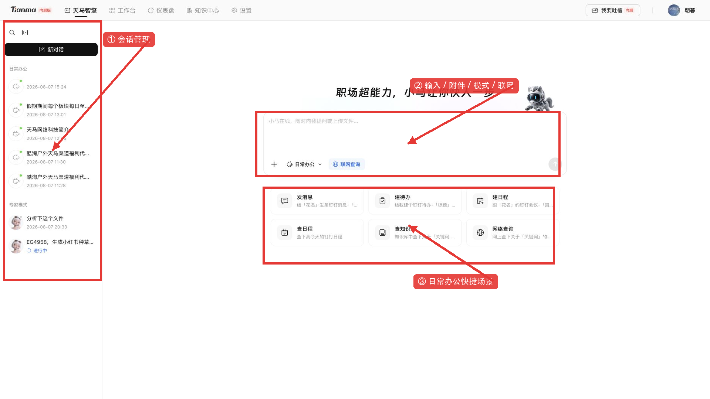
02.2 · 模式定位
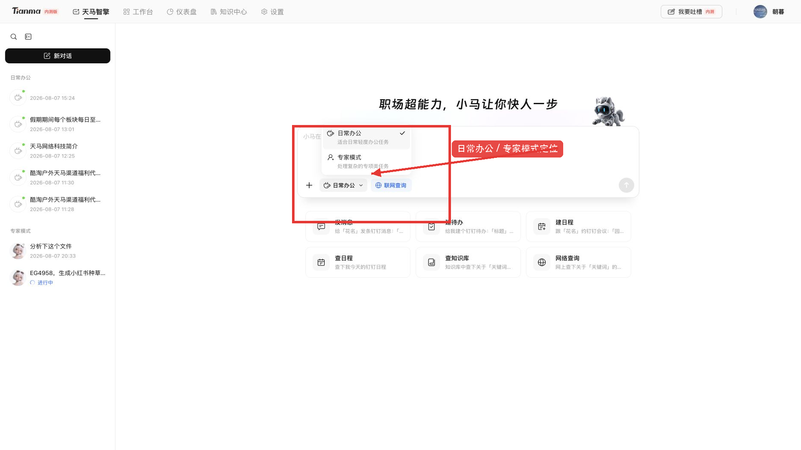
先判断任务，而不是凭感觉点
这是通用办公或协同动作吗？是 → 日常办公
依赖专业知识、固定流程吗？是 → 专家模式
既有专业分析又要落地？先专家 → 后日常
02.3 · 专家智能体
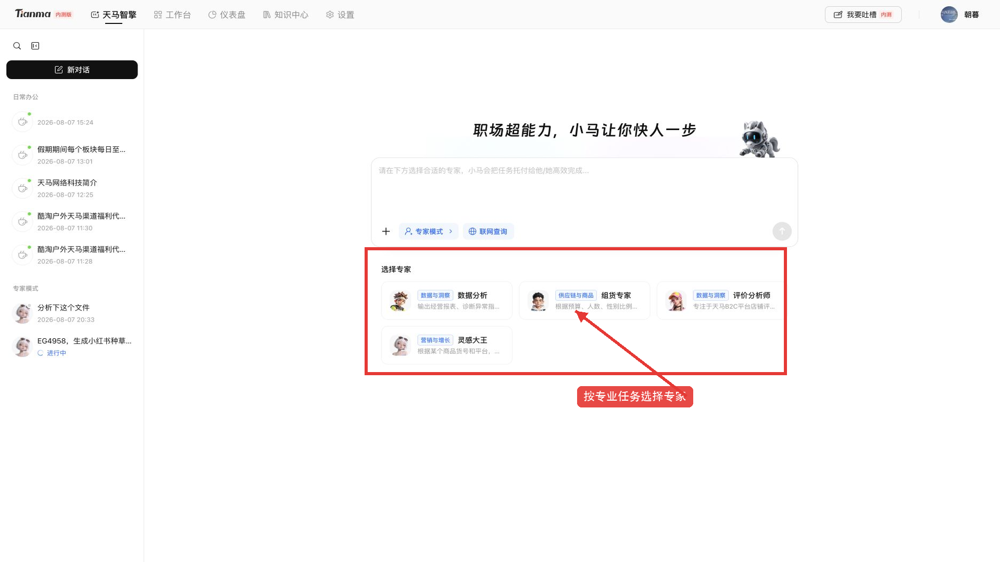
02.4 · 本地附件
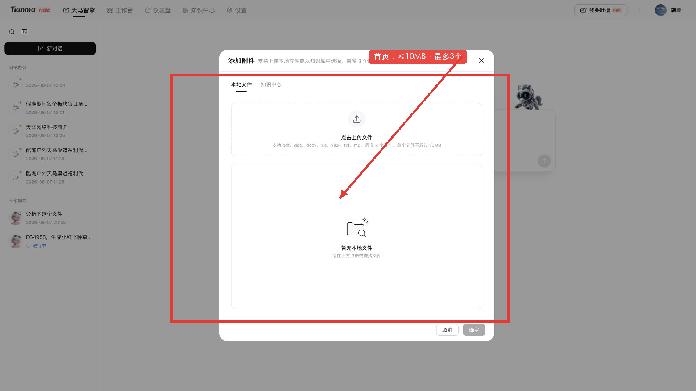
02.5 · 知识引用
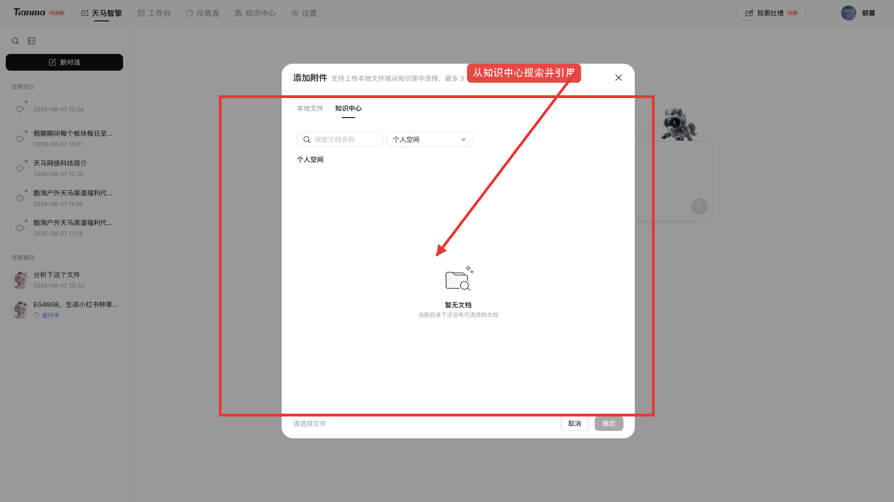
02.6 · 会话管理
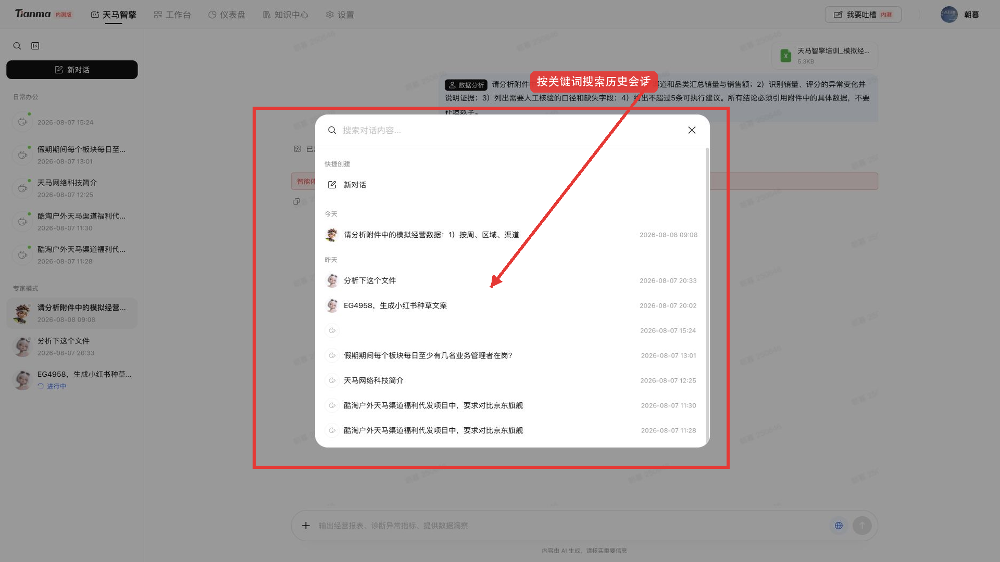
02.7 · 对话细节
重新编辑：修改原问题后再次提交
重新生成：同一输入再获取一次回答
复制 / 引用来源：保留可追溯证据
失败时先检查材料和要求，再重试或反馈
02.8 · 知识中心
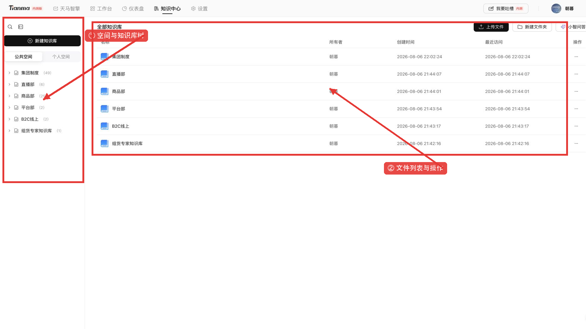
02.9 · 知识建设
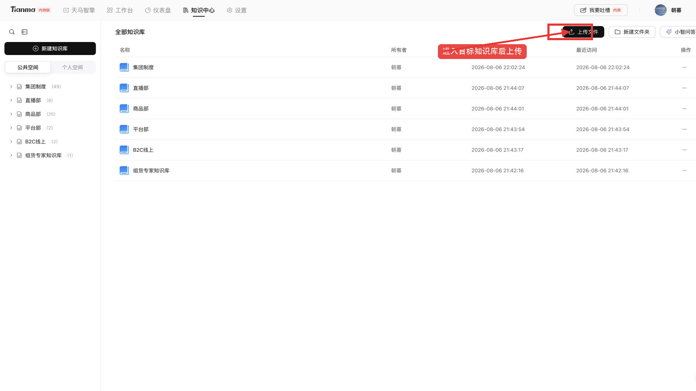
02.10 · 知识中心 → 首页对话
知识中心沉淀材料，首页选择任务路径；处理成功后再引用
02.11 · 工作台
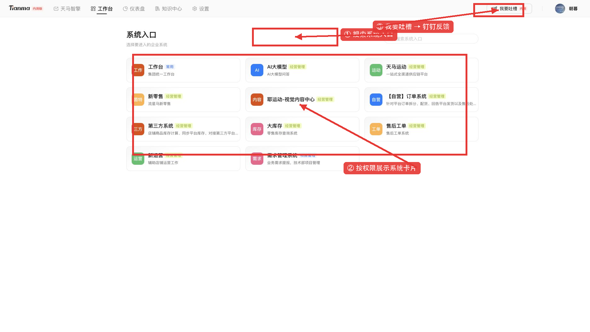
03.1 · 组货场景
输入：预算、人数、性别比例、品类与季节
过程：匹配知识库方案和商品信息
复核：总金额、数量、SKU 来源、库存与假设
03.2 · 评价场景
选择全景、差评、品牌、SKU、地区或物流视角
要求列出证据、影响范围与优先级
人工核验样本偏差、异常订单和业务原因
03.3 · 数据分析入口
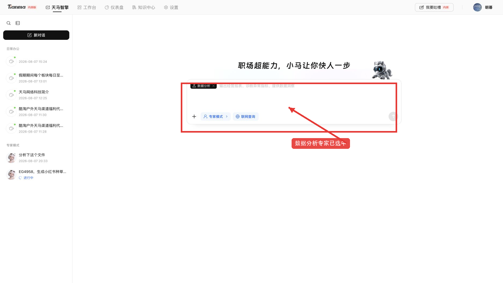
03.3 · 八步闭环
1 定义问题与决策 2 明确口径和维度
3 整理数据与脱敏 4 选择上传路径
5 选择专家并挂文件 6 六要素写任务
7 看执行、校验证据 8 沉淀结果并反馈
03.3 · 文件检查
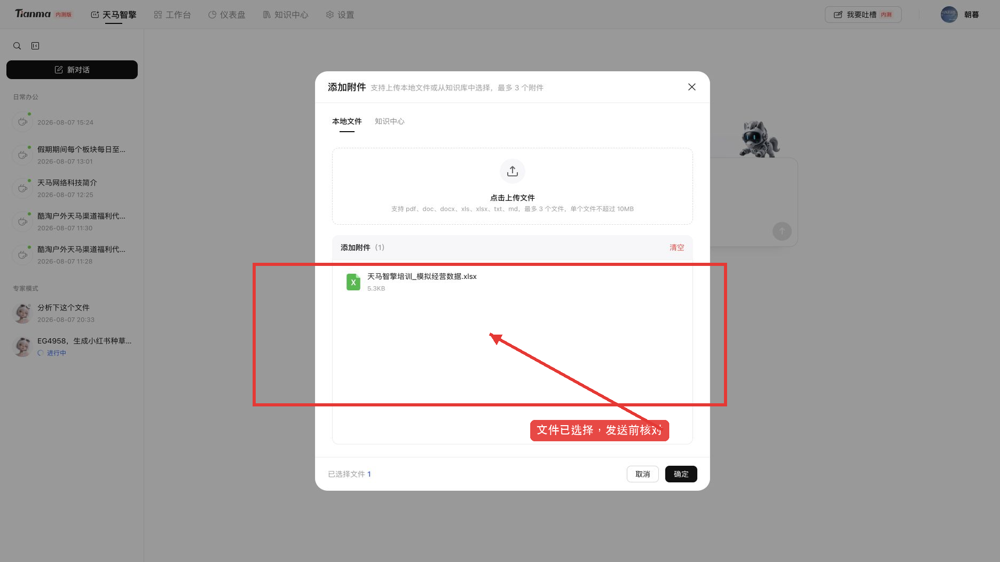
03.3 · 提问示例
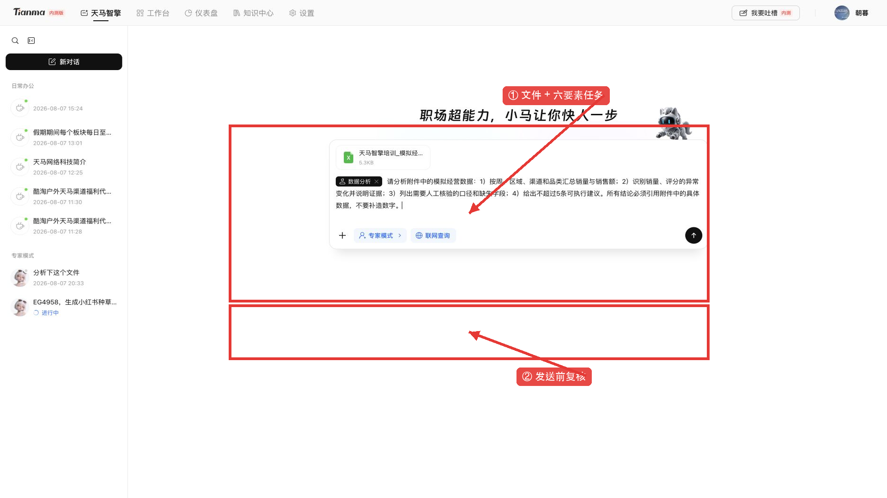
03.3 · 执行与异常
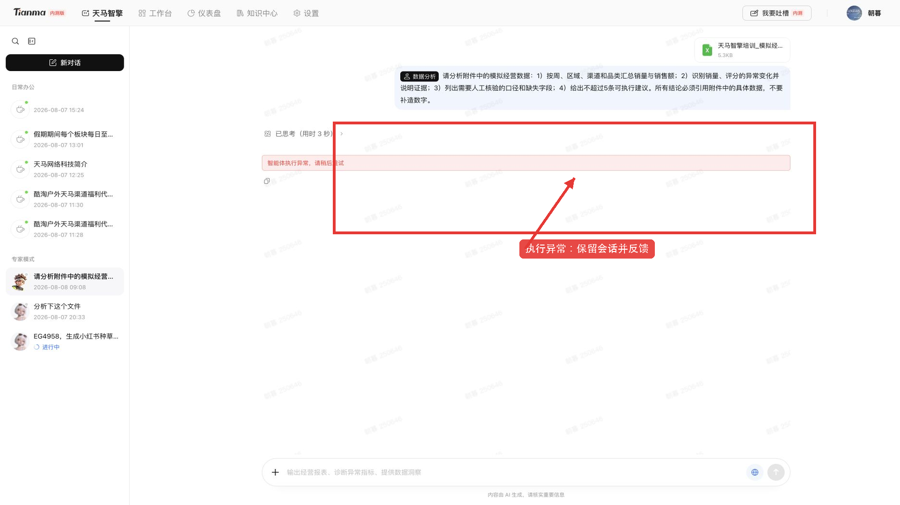
03.4–03.5 · 横向工作
日常办公：写作、整理、消息、待办、日程等协同
知识问答：限定知识库和文件范围后提问
共同要求：写清对象、期限、格式，重要内容回查
04 · 反馈与共建
入口：平台“我要吐槽”
去向：跳转钉钉链接填写
内容：场景、步骤、期望、实际、时间、影响、脱敏截图
正向反馈同样重要：说明好用在哪里、节省了什么
把问题变成下一轮改进输入
为什么找不到知识文件？
什么时候用日常办公，什么时候用专家？
数据分析异常后先做什么？
工作台为什么和同事看到的不一样？